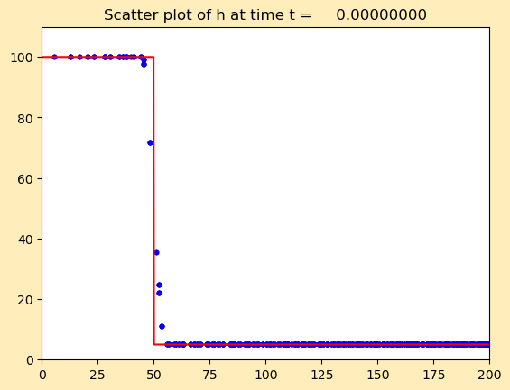

< < < Index > > >

Image source: /home/cade/Homework/AMATH574/Homework6/radialdam/_plots_1/frame0000fig10.png
Other figures at this time: depth depth (contour) Scatter All Figures
Other frames: 0 1 2 3 4 5 6 7 8 9 10 All Frames